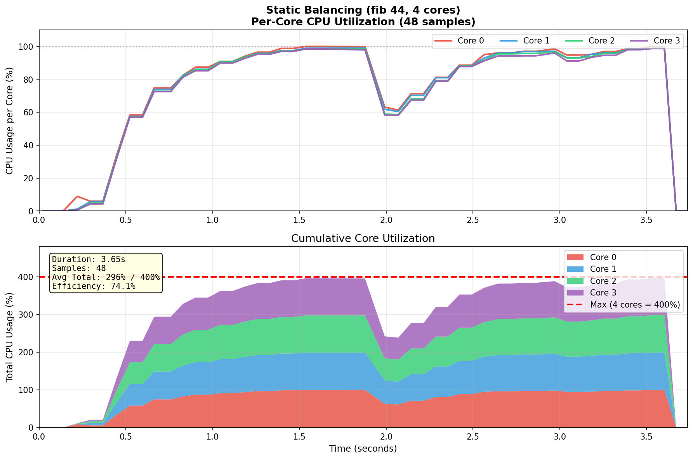
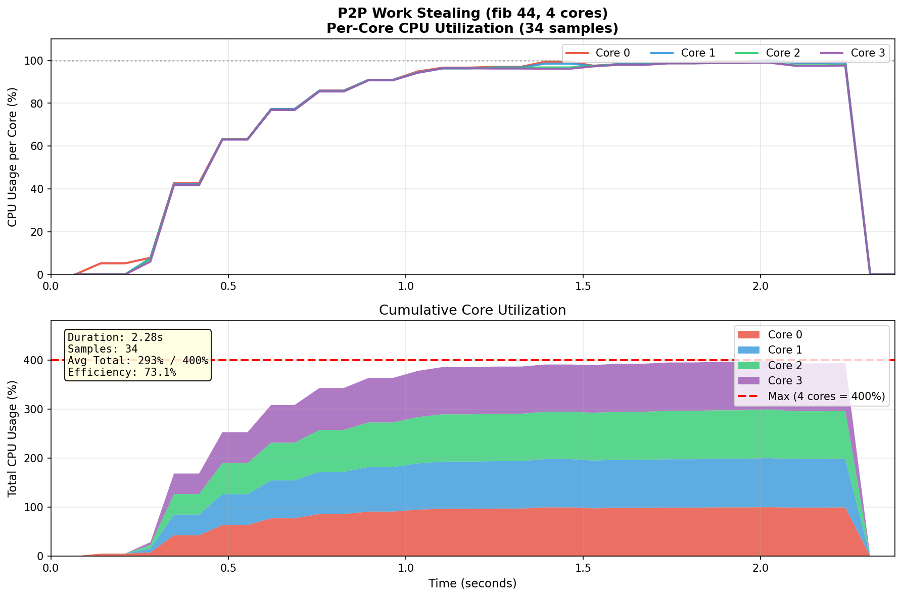
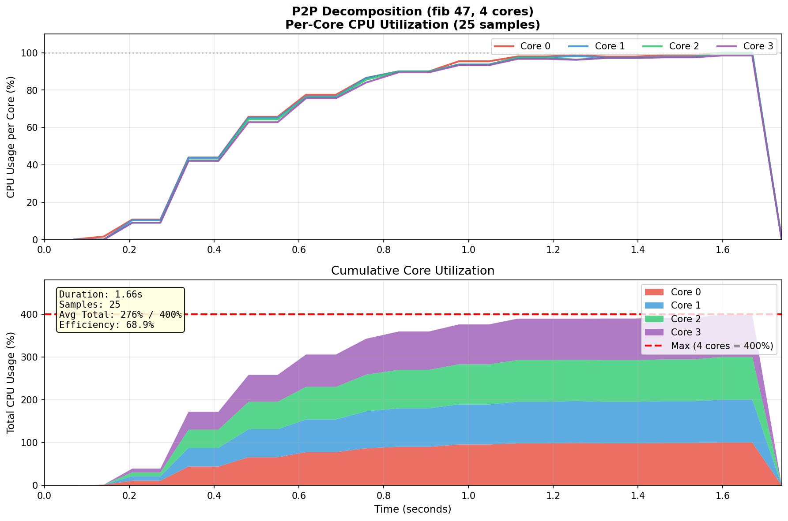
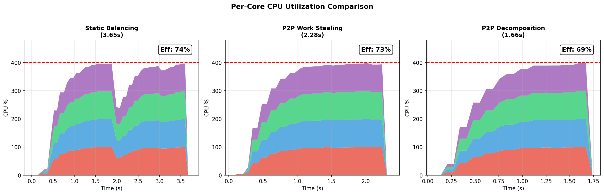

При стандартните подходи (статично балансиране и work stealing), всяка задача fib(n) се изчислява изцяло от един процес. Това създава фундаментално ограничение - ако fib(45) отнема 2.5 секунди, никакво преразпределение не може да намали това време под 2.5s.
Разбиваме самата задача на подзадачи, които се разпределят между процесите:
fib(45) = fib(44) + fib(43)
Всяка подзадача може да бъде изпратена на различен процес, което позволява истински паралелизъм вътре в изчислението на една голяма задача.
Алгоритъм:
n > праг (30) → декомпозирай на fib(n-1) и fib(n-2)n ≤ праг → изчисли директно (рекурсивно)| Процеси | Време (s) | Ускорение | Ефективност | CPU баланс |
|---|---|---|---|---|
| 1 | 2.03 | 1.00x | 100% | 100% |
| 2 | 1.03 | 1.96x | 98% | 100% |
| 4 | 0.56 | 3.61x | 90% | 100% |
| 8 | 0.36 | 5.65x | 71% | 99.8% |
| Метрика | Статично | Work Stealing | Декомпозиция |
|---|---|---|---|
| Ускорение | 1.43x | 2.57x | 5.65x |
| Ефективност | 18% | 32% | 71% |
| CPU баланс | 15-100% | ~45% | ~100% |

Наблюдение: Само едно ядро (Core 0) е натоварено на 100%, останалите са почти idle. Това показва лош баланс.

Наблюдение: По-добро разпределение между ядрата, но все още неравномерно.

Наблюдение: Всички 4 ядра работят на близо 100% през цялото време - отличен баланс!

| Праг | Брой задачи | Време (4p) | Коментар |
|---|---|---|---|
| 20 | 17,711 | 0.82s | Много малки задачи, overhead |
| 25 | 4,181 | 0.58s | Добър баланс |
| 30 | 1,597 | 0.56s | Оптимален |
| 35 | 610 | 0.68s | Твърде едри задачи |
Извод: Праг 30 е оптимален за Фибоначи.
Статичното балансиране достига таван ~1.5x ускорение
Work Stealing подобрява до ~2.5x, но е ограничен от грануларността
Декомпозицията постига 5.65x ускорение при 8 ядра (близко до линейно!)
Грануларността е критична - задачи, които не могат да се разбият, ограничават паралелизма. За рекурсивни алгоритми като Фибоначи, декомпозицията е задължителна за постигане на линейно ускорение.
Допълнение към курсов проект по Разпределени Софтуерни Архитектури, 2026 г.